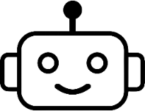
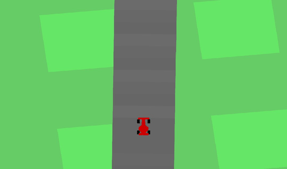

Turn 1
Participant instruction changes (verbatim)
added instruction: Keep the car straight on a straight road

Policy rollout

Show model summary
The model keeps the car centered and aligned by producing a steering value from the closest lateral offset, the mean future road heading, and the car's heading. Acceleration is encouraged when there is no corner ahead and speed is low; braking is increased when a corner is ahead, when offtrack, or when speed is high. All three control outputs are linear combinations of the computed scalar features and are then clipped to their required ranges.
Show PyTorch model
import torch
from torch import nn
class RacecarPolicy(nn.Module):
def __init__(self):
super().__init__()
# Steering weights: steer = w_x * closest_x + w_theta * future_theta_mean + w_heading * abs_heading
self.w_x = nn.Parameter(torch.tensor(0.40, dtype=torch.float32)) # positive: x>0 -> steer right
self.w_theta = nn.Parameter(torch.tensor(0.30, dtype=torch.float32)) # positive: upcoming left turn -> steer right to stay straight
self.w_heading = nn.Parameter(torch.tensor(-0.20, dtype=torch.float32))# negative: reduce steer if car already pointed that way
# Acceleration params: accel = base_accel + w_speed*(1 - speed) + w_corner_accel*(1 - any_corner)
self.base_accel = nn.Parameter(torch.tensor(0.20, dtype=torch.float32))
self.w_speed = nn.Parameter(torch.tensor(0.40, dtype=torch.float32)) # more accel when speed low
self.w_corner_accel = nn.Parameter(torch.tensor(0.30, dtype=torch.float32))# more accel when no corner
# Braking params: brake = base_brake + w_corner_brake*any_corner + w_offtrack*offtrack + w_speed_brake*clamp(speed-0.6,0)
self.base_brake = nn.Parameter(torch.tensor(0.00, dtype=torch.float32))
self.w_corner_brake = nn.Parameter(torch.tensor(0.40, dtype=torch.float32))
self.w_offtrack = nn.Parameter(torch.tensor(0.50, dtype=torch.float32))
self.w_speed_brake = nn.Parameter(torch.tensor(0.40, dtype=torch.float32))
def forward(self, tiles, indicators):
# tiles: (B, L=8, 7), indicators: (B, 7)
closest_x = tiles[:, 0, 0] # (B,)
future_theta_mean = torch.mean(tiles[:, :, 4], dim=1) # (B,)
any_corner = (tiles[:, :, 6] > 0.5).any(dim=1).float() # (B,)
offtrack = torch.clamp(torch.abs(closest_x) - 0.2, min=0.0) # (B,)
speed = indicators[:, 0] # normalized [0,1]
abs_heading = indicators[:, 1] # normalized [-1,1]
# Steering (no bias): keep centered and counter small heading errors
steer_raw = self.w_x * closest_x + self.w_theta * future_theta_mean + self.w_heading * abs_heading
steer = torch.clamp(steer_raw, -1.0, 1.0)
# Acceleration: prefer accelerate when no corner and speed is low
accel_raw = self.base_accel + self.w_speed * (1.0 - speed) + self.w_corner_accel * (1.0 - any_corner)
accel = torch.clamp(accel_raw, 0.0, 1.0)
# Braking: increase for corners, offtrack, or high speed
speed_excess = torch.clamp(speed - 0.6, min=0.0)
brake_raw = self.base_brake + self.w_corner_brake * any_corner + self.w_offtrack * offtrack + self.w_speed_brake * speed_excess
brake = torch.clamp(brake_raw, 0.0, 1.0)
output = torch.stack([steer, accel, brake], dim=1) # (B,3)
return output